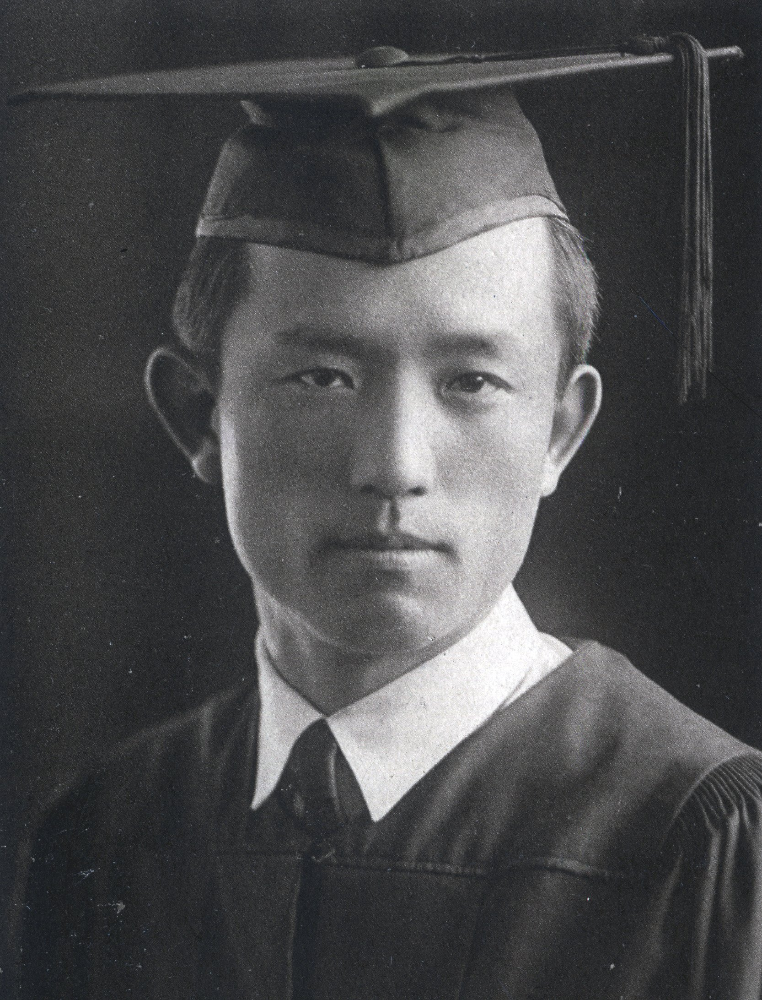
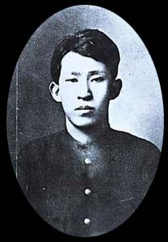
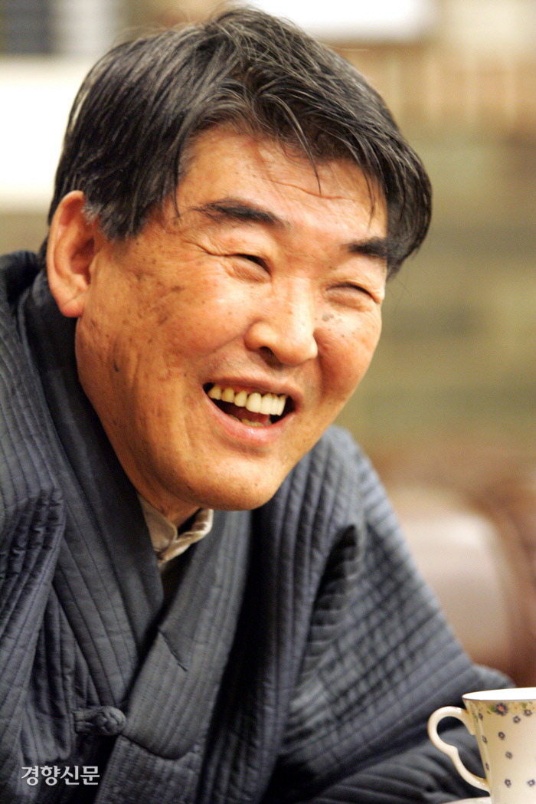
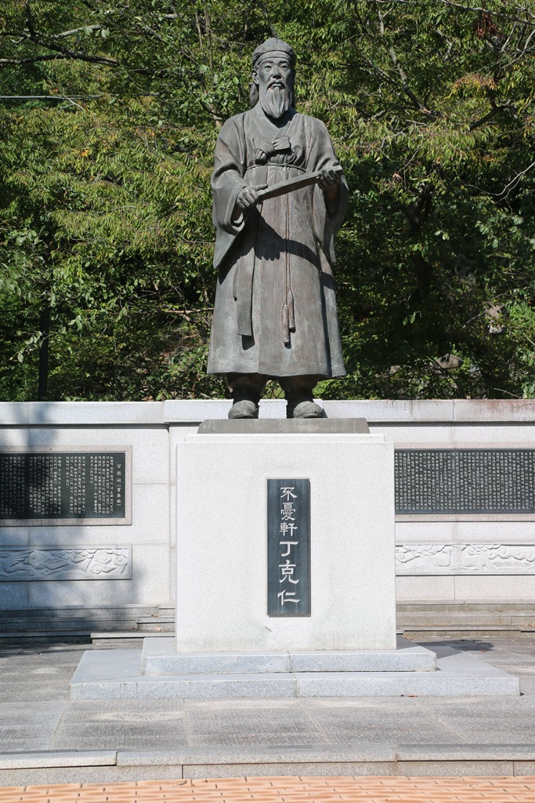
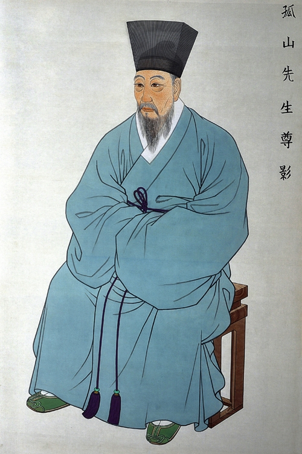
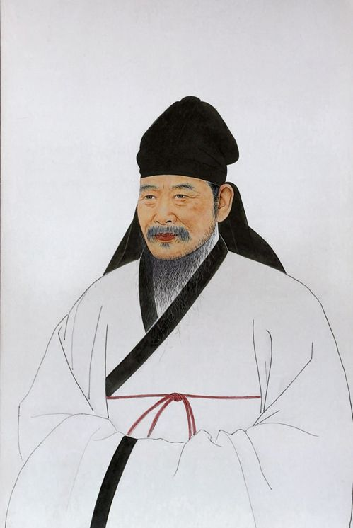
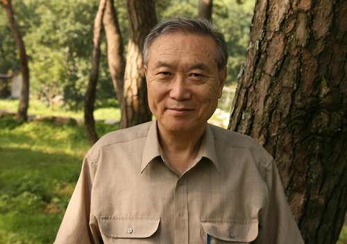
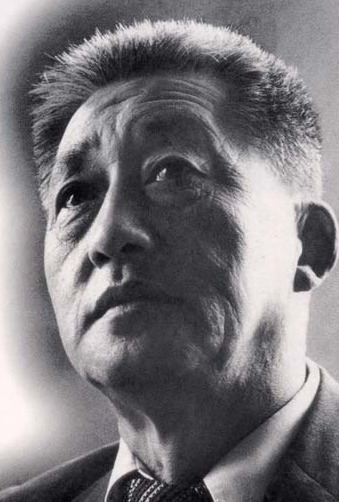
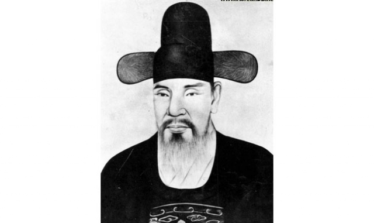
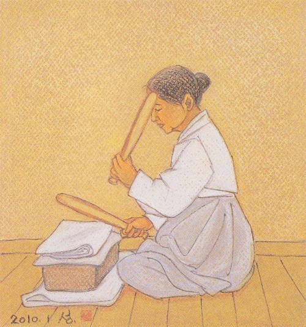

모바일에서 접속하시거나
휴대폰을 돌려주세요!
<시인 심리테스트>

본 심리테스트는 국어 시간에 배운 시인들 12명 중
자신에게 맞는 시인을 추천해주는 사이트입니다.
여름방학을 떠올렸을 때 가장 먼저 하고 싶은 것은?
개학식 날이 밝았다. 학교에 생각보다 일찍 도착했는데 이 시간 동안 할 것은?
선생님과의 면담날이다. 내가 건낼 인사말은?
수학여행 하루 전이다. 내일 어떤 옷을 입고 갈것인가?
시험 날이다. 아침 식사로 내가 먹고갈 것은?
축제날이다. 무대를 하나 해야하는데 내가 할 무대는?
<심리테스트 결과>
당신에게 시인 윤동주를 추천합니다!
학업, 성찰, 독립운동의 시인
수업시간에 배운 작품: 쉽게 쓰여진 시, 길, 등
연희전문 문과를 졸업한 뒤 일제강점기에 ‘하늘과 바람과 별과 시’를 저술한 시인이다.
대표 작품으로는 ‘서시’, ‘별 헤는 밤’, ‘참회록’ 등이 있다.
남 앞에 나서는 것을 별로 좋아하지 않는 내성적 성격이었지만,
어려운 상황에서도 저항시를 저술하는 의지와 뜻을 보여주었고,
자신이 옳다고 생각한 일은 망설임 없이 행동한 시인이었다.
<심리테스트 결과>
당신에게 시인 이상을 추천합니다!
초현실주의, 세태에 대한 비판, 대담한 시인
수업시간에 배운 작품: 조춘점묘
본명은 김해경으로 일제강점기에 활동한 시인, 소설가, 수필가, 건축가, 화가이다.
이상은 기존 문법 파괴, 수학적 기호 사용, 전문 용어 및 외국어 사용 등으로 그 당시 문학계에 신선한 충격을 준 모더니즘 문학의 대표 주자이다.
대표 작품으로는 ‘이런시’, <슬픈 이야기>, ‘오감도’ 등이 있다.
<심리테스트 결과>

당신에게 시인 이항복을 추천합니다!
연군, 그리움
수업시간에 배운 작품: 시조
조선 승정원, 동부승지, 당상관을 거쳐 영의정까지 오르게 된 조선의 문신, 정치가, 시인이자 작가이다.
인목대비의 폐위에 반대하면서 상소를 올렸다는 이유로 북청으로 귀양을 가게 되었다.
이러한 상황 속에서도 연군을 주제로 한 시를 쓰는 등 임금에 대한 그리움의 정서를 보여줬다.
대표작으로는 <오성과 한음>, ‘백사집’ 등이 있으며 권율의 사위로 알려져 있다.
<심리테스트 결과>
당신에게 시인 김지하를 추천합니다!
자유로움, 비상, 정치
수업시간에 배운 작품: 새
본명은 김영일이며 대한민국의 시인이다.
학생 운동과 민주화 운동에도 참여한 전적이 있을 정도로 현실의 억압에 대한 절망과 자유를 갈망하는 사람으로 볼 수 있다.
이러한 경향은 그의 작품에서 많이 들어나는데 대표 작품으로는 ‘타는 목마름으로’, ‘시삼백’, ‘오적’ 등이 있다.

<심리테스트 결과>
당신에게 시인 정극인을 추천합니다!
자연친화, 흥취, 평화로움
수업시간에 배운 작품: 상춘곡
조선시대 문신이며 성균관에 입학하였다.
1437년 세종대왕 흥천사 중건을 위한 토목공사에 대해 유생들과 부당함을 주장하다가 쫓겨나 귀양을 가게 되었다.
정치사에서보다 문학사에서의 위상이 더 높고 선비로서 청렴한 삶을 고수하고 검소하며 소박한 삶을 살았다고 알려져 있다.
대표 작품으로는 ‘불우헌가’, 한림별곡체의 ‘불우헌곡’ 등이 있다.
<심리테스트 결과>
당신에게 시인 윤선도를 추천합니다!
자연친화, 의지, 학문
수업시간에 배운 작품: 만흥
정철, 박인로, 송순과 함께 조선 시조시가의 대표로 꼽히며 대표작으로는 ‘오우가’, ‘어부사시사’ 등이 있다.
남인 중진 문신으로 예송 논쟁 당시 송시열이 효종의 정통성을 부정하는 상소를 올려 다른 남인들과 서인의 맹공으로 인해 유배를 당하게 된다.
유배지에서도 좌절하지 않고 학문 연구와 시문을 계속 지으며 소일한 것으로 알려져 있다.
<심리테스트 결과>

당신에게 시인 황진이를 추천합니다!
재능, 예술성, 애정
수업시간에 배운 작품: ‘청산리 벽계수야 수이 감을 자랑마라’
기생으로 조선 전기 시인이자 예술가이며 조선 최고 여류시인이다.
가상의 인물인지 실존 인물인지 아직 정확하게 파악이 되진 않았지만 매우 뛰어난 미모와 시, 서예, 음악에 대한 재능이 있었다.
대표작으로는 ‘만월대 회고시’, ‘동지달 기나긴 밤을 한허리를 베어내어’, ‘영반월’ 등이 있다.
<심리테스트 결과>
당신에게 시인 정철을 추천합니다!
연군, 여성화자, 외향적
수업시간에 배운 작품: 사미인곡, 속미인곡
조선시대 우의정, 좌의정, 전라도체찰사 등을 역임한 문신이다.
작품이나 이름과 달리 간사하고 흉악하고 독하며 노는 것을 좋아한 것으로 알려져 있다.
을사사화에 계림군이 관련 되어 아버지와 큰형이 유배 되었었는데 정철은 아버지를 따라 유배를 갔다.
대표작으로는 ‘성산별곡‘, ‘관동별곡‘ 등이 있으며 인간미, 자연미, 멋스런 호방함을 담아낸 작품이 많아 폭넓은 사대부의 정신세계를 보여준다.
<심리테스트 결과>
당신에게 시인 황동규를 추천합니다!
성숙함, 감수성
수업시간에 배운 작품: 즐거운 편지
대한민국의 시인, 영문학자, 대학 교수이다.
대표작품으로는 <풍장>, <삼남에 내리는 눈>이 있고, 아버지가 <소나기>로 유명한 황순원 소설가이다.
현대시사의 맥락을 형성했으며 독특한 양식으로 현대시의 방법적, 인식적 지평을 확대했다는 점에서 지속적인 관심을 받아오고 있으며,
1980년도에 한국문학상을 수상하기도 했다.
<심리테스트 결과>
당신에게 시인 박목월을 추천합니다!
교육, 다정함, 내향적
수업시간에 배운 작품: 이별가
대한민국의 시인이자, 교사이자, 대학 교수이다.
군가 <전우>, 포스코, 한국일보, MBC의 사가, 신정고등학교 교가 등을 작사하였으며, 교과서에 실린 작품인 <가정>의 작사가이기도 한다.
대통령 찬가 또한 작사하여 권력에 아첨하는 시인 아니냐는 비판을 받기도 했다.
언제나 누구에게나 호인으로 성품이 아주 뛰어난 것으로 알려져 있다.
대표작품으로는 ‘송아지’, ‘청노루’, ‘나그네’가 있다. 윤여정 배우가 그의 제자로 알려져 있다.
<심리테스트 결과>
당신에게 시인 조위를 추천합니다!
지도자, 명작가
수업시간에 배운 작품: 만분가
조선 초기 문신이며 도승지, 충청도관찰사, 동지중추부사 등을 역임하였다.
성종의 명령으로 김종직 문집 편찬 시 ‘조의제문’을 실어 무오사화의 화근이 된 것으로 유명하다.
대표작품 중 하나인 <매계집>은 신라 말기 해인사와 신라왕실, 진성여왕과 위홍의 관계를 증언해주는 주요 자료로 사용된다.
하정사로 명나라에 다녀오다가 잡혀 의주와 순천에 유배 되어 그 곳에서 병으로 생을 마감하였다.
<심리테스트 결과>
당신에게 시인 양태사를 추천합니다!
감수성, 섬세함
수업시간에 배운 작품: 야청도의성
발해 문왕 시절 귀덕장군으로 시인으로 활동했고 대표작으로는 시집 ‘경국집’이 있다.
‘야청도의성’은 발해사 연구 뿐만 아니라 시문학 연구에 귀중한 자료가 되는 뛰어난 시로 평가 받는다.
외교관 시절 일본 사절단으로 갔을 때 지은 한시이다.